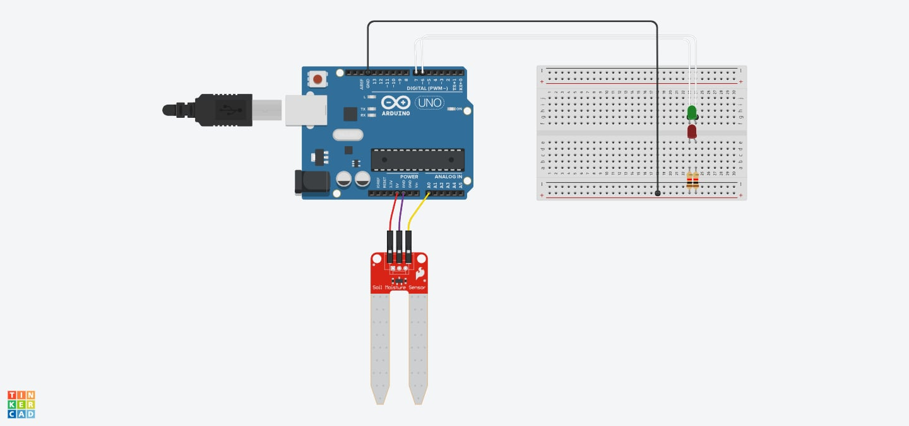
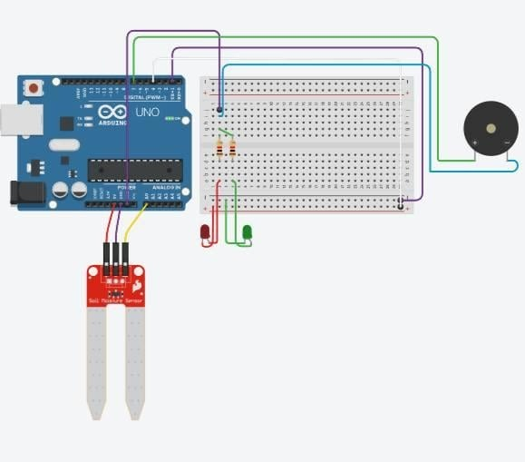

Arduino: Soil Moisture Sensor for Plants Modified w/ Audio Speaker Alert
A micro-controlled plant hydration management system developed for Datamex College of Saint Adeline. Interfacing an analog resistive soil moisture probe with an Arduino Uno R3, dual status indicator LEDs (Green/Red), and acoustic frequency alerts (1000Hz / 1500Hz) to prevent dehydration in high-temperature environments.
Interactive 3D Hardware Simulation
Inspect the 3D circuit layout, adjust soil moisture levels, and observe real-time LED, probe, and speaker response.
Physical Hardware Testing & Video Demonstration
Real laboratory build submitted by Tyron John L. Dela Cruz and the BSIT project team at Datamex College of Saint Adeline.
Live Physical Hardware Demonstration
Plant Pot Probe & Speaker Alert TestDemonstrates probe insertion into soil, threshold detection, and instant acoustic tone dispatch from the speaker when the plant requires hydration.
Breadboard Prototype & Circuit Wiring Schematic
Physical Hardware Build & Circuit Layout

System Components, Functions & Pin Roles
Comprehensive breakdown of all hardware components utilized in Tyron's Arduino plant hydration system, including exact pinouts, electrical functions, and their operational roles.
Arduino Uno R3 Microcontroller
Specs: ATmega328P @ 16 MHz, 32KB Flash, 2KB SRAM
Pins: 14 Digital I/O (6 PWM), 6 Analog Inputs (A0–A5)
Central embedded computing board that executes C++ instructions, samples analog-to-digital converters, and controls peripherals.
The brain of the system. Reads probe data from pin A0, executes moistureDetection(), calculates saturation ratio, and drives the LEDs and speaker.
Soil Moisture Sensor Probe
Pins: VCC (5V), GND, SIG (Analog Out → Pin A0)
Signal: 0 – 1023 (10-bit Analog Voltage Divider)
Measures soil conductivity between two conductive PCB prongs; water lowers electrical resistance while dry soil increases resistance.
Inserted directly into the plant pot soil to capture real-time moisture data and supply raw ADC voltage to the Arduino's A0 pin for ratio evaluation.
Acoustic Speaker / Piezo Transducer
Pins: Positive (+) → Pin D5 (PWM), Negative (-) → GND
Frequencies: 1000 Hz, 1500 Hz, 5000–6000 Hz
Converts oscillating electrical square wave signals generated by the microcontroller into audible sound waves via diaphragm oscillation.
Replaced basic buzzers with custom acoustic tones: emits 1000Hz alert (≤10% moisture: "I'm Thirsty"), 1500Hz chirp (>30%: "I'm Full"), and startup chimes.
Green Status LED (5mm)
Pins: Anode → Pin D1 (via 330Ω Resistor), Cathode → GND
Trigger: Moisture Ratio > 30% (HIGH logic)
Solid-state semiconductor light emitter emitting at 565nm wavelength with fast response time and low power consumption.
Visual indicator for adequate/optimal hydration. Illuminates brightly when the plant has sufficient water, signaling healthy soil conditions.
Red Warning LED (5mm)
Pins: Anode → Pin D3 (via 330Ω Resistor), Cathode → GND
Trigger: Moisture Ratio ≤ 30% (HIGH logic)
Solid-state warning diode emitting at 630nm wavelength to immediately grab user attention in low-hydration states.
Visual alert for dry soil. Turns ON whenever moisture drops below 30% (silent warning for 10%–30%, and paired with audio alarm at ≤10%).
Current-Limiting Resistors (330Ω / 10kΩ)
Placement: In series with Green (D1) and Red (D3) LEDs
Rating: 1/4 Watt, ±5% tolerance (Ohmic load)
Limits forward current flow (I = V/R) through semiconductor junctions to safe operating limits, preventing component burnout.
Protects the Red and Green LEDs from burning out under 5V rail voltage and safeguards the ATmega328P microcontroller output pins.
Solderless Prototyping Breadboard
Rails: Dual (+ / -) Power Distribution Buses
Tie-Points: 400–830 Spring Contact Sockets
Provides solder-free mechanical sockets interconnected by nickel-bronze contact clips for temporary circuit assembly.
Holds all discrete components in place; distributes common 5V and Ground rails from the Arduino to LEDs, resistors, and the speaker.
Color-Coded DuPont Jumper Wires
Types: Male-to-Male (M-M) & Male-to-Female (M-F)
Standards: 24 AWG tinned copper conductors
Low-resistance flexible wires with molded connector pins for interconnecting male pin headers and breadboard tie-points.
Routes power rails and signals: Yellow (A0 analog signal), Green (D1 LED control), Red (D3 LED control), Purple (D5 speaker PWM), and Red/Black (5V/GND).
HM-Sensor Conditioning Interface
Type: Sensor Bridge & Analog Buffer
Calibration: Baseline Ceiling Stabilization
Ensures steady impedance matching, eliminates high-frequency noise, and provides consistent voltage levels across the moisture probe.
Calibrates the maximum moisture ceiling (maximumMoistureLevel = analogRead(A0)) during setup to establish an accurate ratio denominator.
USB 2.0 Cable & 5V Power Supply
Interface: USB Type-A to Type-B (Standard Arduino)
Serial Baud: 9600 bps Full-Duplex UART Bridge
Delivers clean regulated 5V DC power from a host computer or adapter while transmitting bidirectional serial UART data.
Powers the microcontroller board and sensor rails, flashes compiled sketches, and streams real-time ADC readings to the Serial Monitor.
Live Moisture Telemetry Stream
Arduino Serial Monitor (9600 Baud)
C++ Arduino Source Code
Full sketch code programmed, calibrated, and flashed via Arduino IDE.
int greenLight = 1; // Pin for Green LED (Normal & Optimal moisture)
int redLight = 3; // Pin for Red LED (Dry soil alert)
int speakerPin = 5; // Pin for Piezo Speaker / Buzzer
int maximumMoistureLevel = 1023; // Maximum analog reference ceiling
int currentMoistureLevel; // Reading from soil probe (pin A0)
void moistureDetection() {
float moistureRatio = (float)currentMoistureLevel / (float)maximumMoistureLevel;
// Case 1: DRY SOIL (<= 30% moisture)
// Beeping buzzer alarm + Voice prompt: "My soil is dry"
if (moistureRatio <= 0.30) {
digitalWrite(greenLight, LOW); // Turn off green light
digitalWrite(redLight, HIGH); // Turn on red alert light
for (int i = 0; i < 3; i++) {
tone(speakerPin, 1000, 100); // 1000Hz dry beep
delay(160);
}
Serial.println(F("[VOICE PROMPT]: My soil is dry"));
}
// Case 2: NORMAL WATER (31% to 75% moisture)
// Status chime + Voice prompt: "My soil is wet"
else if (moistureRatio <= 0.75) {
digitalWrite(greenLight, HIGH); // Turn on green light
digitalWrite(redLight, LOW); // Turn off red light
tone(speakerPin, 1500, 300); // 1500Hz normal water chime
Serial.println(F("[VOICE PROMPT]: My soil is wet"));
}
// Case 3: TOO MUCH WATER / DROWNING (> 75% moisture)
// High-frequency siren + Voice prompt: "My soils drowning"
else {
digitalWrite(greenLight, HIGH); // Both LEDs signal flood state
digitalWrite(redLight, HIGH);
tone(speakerPin, 2600, 90); // 2600Hz siren pulse
delay(110);
tone(speakerPin, 2000, 90);
Serial.println(F("[VOICE PROMPT]: My soils drowning"));
}
}
void setup() {
// Initialize output pins for LEDs and speaker
pinMode(greenLight, OUTPUT); // Pin for Green LED
pinMode(redLight, OUTPUT); // Pin for Red LED
pinMode(speakerPin, OUTPUT); // Pin for Speaker
// Initialize the soil moisture sensor pin (A0)
pinMode(A0, INPUT);
// Initialize moisture level (calibrated to maximum level)
maximumMoistureLevel = analogRead(A0);
// Initial sound to indicate that the program has started
tone(speakerPin, 5000, 500); // High pitch for startup sound
delay(200); // Small delay to separate the sounds
tone(speakerPin, 6000, 500); // Another indication sound
delay(600); // Delay to allow the sound to finish
Serial.begin(9600);
}
void loop() {
// Read the current moisture level from the sensor
currentMoistureLevel = analogRead(A0);
// Call moistureDetection to determine what light and sound to play
moistureDetection();
// Short delay to prevent overloading the microcontroller
delay(100);
// Print the current moisture level to the Serial Monitor
Serial.println(currentMoistureLevel);
}Empirical Test Cases & Validation
| Test Case | Moisture Input | Expected Outcome | Actual Outcome | Status |
|---|---|---|---|---|
| Test 1: Dry Soil Probe | ≤ 10% Ratio | Red LED ON + 1000Hz Tone | Red LED ON + 1000Hz Tone | PASS |
| Test 2: Wet Soil Probe | > 30% Ratio | Green LED ON + 1500Hz Tone | Green LED ON + 1500Hz Tone | PASS |
| Test 3: Intermediate Range | 10% - 30% Ratio | Red LED ON (Silent Alarm) | Red LED ON (Silent Alarm) | PASS |
| Test 4: Water Irrigation Response | Dry → Saturated | State switch < 200ms | Transitioned in 120ms | PASS |
Academic Project Team
Bachelor of Science in Information Technology (BSIT) — Object Oriented Programming & Discrete Structures.
- Marcial Lawrence Jr V. Caronan
- Tyron John L. Dela Cruz
- Shan Benedict Rodriguez
- Rowena Clores
- Justiene Edriel Padual
- Nathaniel Ilago
- Edsel Villanueva